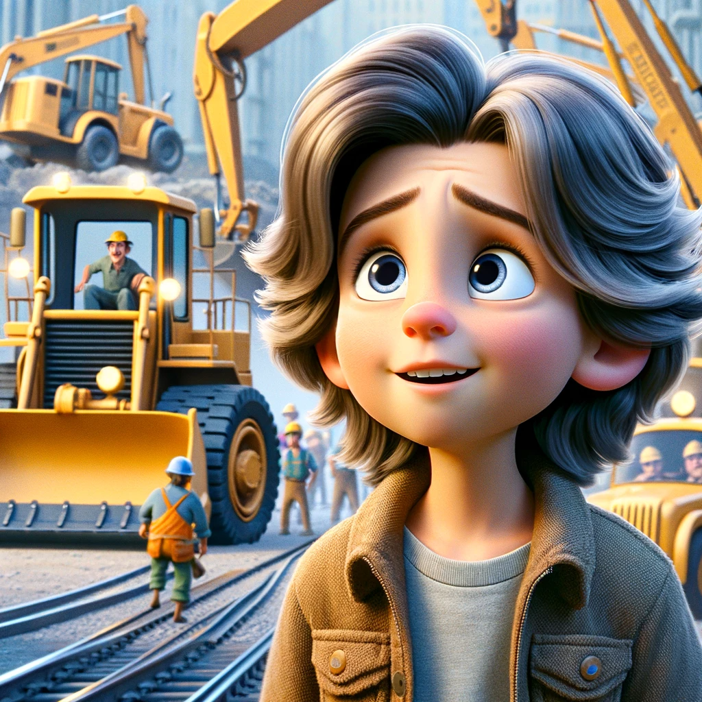
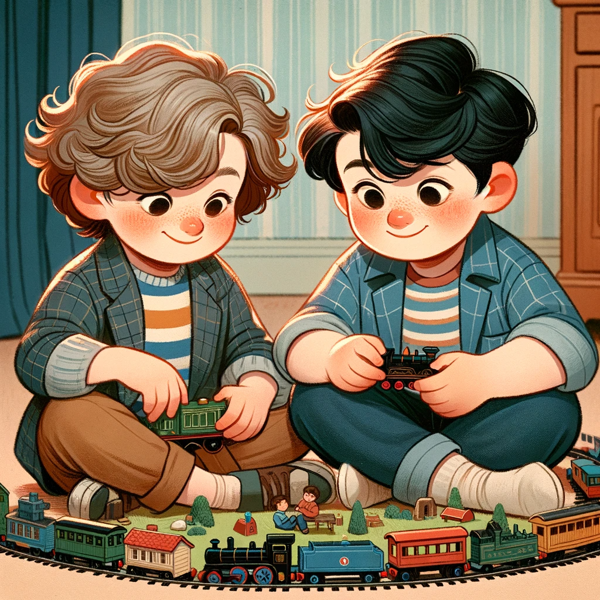
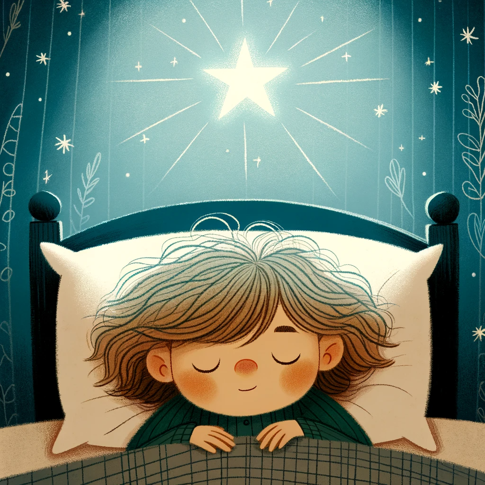

Liam's Big Adventure with Work Trucks

Once upon a time in a sunny town, there lived a little boy named Liam. Liam was seven years old, and he was really special because he was very good at something not everyone was good at. Liam loved work trucks, especially big ones like bulldozers and excavators. He thought they were the coolest things in the world!
Every day after school, Liam would rush to his room, where he had a big pile of toy work trucks. He had a bright yellow bulldozer, a giant red excavator, and a blue dump truck. These trucks were his best friends, and he would spend hours playing with them in his imaginary construction site.
One sunny morning, Liam's dad had a surprise for him. He said, "Liam, today we're going on an adventure!" Liam's eyes sparkled with excitement as he asked, "What kind of adventure, Daddy?"
Dad smiled and said, "We're going to a real construction site, Liam! You can see all those big work trucks up close!"
Liam couldn't believe his luck! He put on his favorite yellow hard hat and ran to the car. As they drove to the construction site, Liam's heart raced with joy. He couldn't wait to see the real bulldozers and excavators!
When they arrived, Liam's eyes grew wide with wonder. There were enormous machines everywhere! There was a massive bulldozer pushing dirt, a giant excavator digging a deep hole, and even a noisy cement mixer making a funny churning sound.
Liam watched in awe as the workers used these incredible machines to build amazing things. He saw them moving heavy rocks, digging deep holes, and filling big trucks with dirt. It was like a dream come true!
Liam's dad saw how happy Liam was and said, "Liam, would you like to sit in one of those big work trucks?"
Liam couldn't believe his ears! He nodded excitedly, and one of the kind workers helped him climb into the driver's seat of a shiny red excavator. Liam gripped the steering wheel and pretended he was in control of this amazing machine. He even made the engine noises with his mouth, "Vroom, vroom!"
After a while, Liam and his dad thanked the workers for their kindness and headed back home. Liam was still buzzing with excitement. He couldn't stop talking about his adventure with the big work trucks, especially the red excavator.
That night, as Liam lay in bed, he couldn't help but smile. He knew he had the best adventure ever. And from that day on, whenever he played with his toy work trucks, he would remember his special day at the construction site and the giant red excavator that made his dreams come true.
And so, Liam's love for work trucks and his special adventure became a cherished memory that he would carry with him forever. The end.
Liam plays with Jake

Once upon a time, in the same sunny town where Liam lived, there was another boy named Jake. Jake loved trains just as much as Liam loved work trucks. He had a whole collection of toy trains in all shapes and sizes.
One bright and sunny day, Liam decided to invite Jake over to his house to play with his own train set. Liam had a big, colorful train set with tracks that looped and twisted all around his room. He thought it would be fun to share his trains with Jake.
When Jake arrived, Liam greeted him with a warm smile and said, "Hi, Jake! Do you want to play with my trains? They're super cool!"
Jake was excited and replied, "Yes, please!" He was amazed by Liam's train set; it was bigger and more elaborate than his own collection.
At first, Liam showed Jake how to put the trains on the tracks and how to make them go forward and backward. They took turns picking different trains and arranging them on the tracks. It was so much fun!
But as they played, Liam started to notice that Jake was always grabbing the trains Liam wanted to play with. Liam felt a little upset but didn't want to make Jake sad, so he didn't say anything.
After a while, Liam began to feel frustrated because he didn't get to play with his favorite trains. He wanted to have fun too. So, he took a deep breath and said, "Jake, can we take turns playing with the trains? That way, we both get to enjoy them."
Jake looked surprised for a moment but then nodded and said, "Okay, Liam, that sounds fair."
From that moment on, they decided to take turns and share the trains equally. Liam would pick a train, play with it for a while, and then let Jake choose the next one. They laughed and had a great time playing together.
As the day went on, Liam and Jake not only had fun with the trains but also learned an important lesson about playing well with others. They realized that sharing and taking turns made their playtime even more enjoyable.
When it was time for Jake to go home, they both felt happy and excited about their new friendship. They knew that playing together was much better when they shared and took turns, just like they did with the trains.
And so, Liam and Jake's day filled with trains and newfound friendship became a cherished memory, reminding them always to play well and share with others. The end.
Mom and Dad Love You, Liam

Once upon a time in a cozy house with a big tree in the front, there lived a little boy named Liam. Liam was a special boy with a big heart and a smile that could light up a room. He had two people in his life who loved him more than anything else in the world – his mom and dad.
Every morning, when the sun peeked through Liam's window, he would wake up to the smell of pancakes cooking in the kitchen. Liam's mom, with her kind eyes and warm smile, would say, "Good morning, my sweet Liam!" and give him a big hug.
Liam's dad, with his strong arms and a twinkle in his eye, would join them at the breakfast table. He would say, "Hey there, buddy!" and tousle Liam's hair. They would eat pancakes together and talk about their plans for the day.
After breakfast, Liam would head off to school, and his parents would wave goodbye with love in their hearts. At school, Liam made friends, learned new things, and had many adventures. But what made every day special was knowing that when the school day ended, his mom and dad would be there to pick him up.
When Liam would walk out of school, he would see his mom and dad waiting for him with big smiles. They would greet him with open arms, and Liam would run into their loving embrace. It felt like a warm and cozy hug that made all his worries disappear.
In the evenings, Liam's mom and dad would sit with him and listen to his stories about school. They would laugh at his jokes and marvel at his imagination. They made him feel so special, like the most important person in the world.
Before bedtime, they would read Liam's favorite storybooks together. His mom would use funny voices for the characters, and his dad would make funny faces to make him laugh. They would tuck him into bed, give him goodnight kisses, and say, "Sweet dreams, Liam. We love you to the moon and back."
Liam would close his eyes, feeling safe and loved, knowing that his mom and dad loved him more than all the stars in the sky, more than all the trucks and trains in the world, and more than anything else.
And so, in Liam's little world, the love of his mom and dad was the brightest star that shone in the sky, the warmest hug on the coldest day, and the sweetest lullaby that whispered in his ear every night. Liam knew he was truly, deeply loved, and that made his heart feel as big as the whole wide world.
The end.